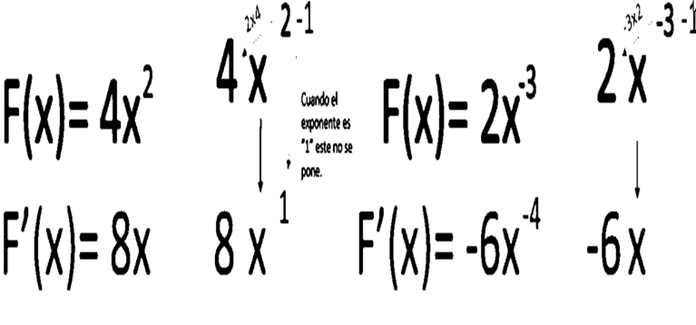
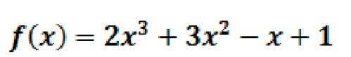
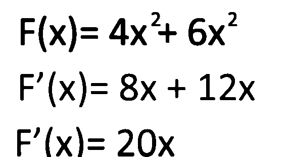

La derivada de un numero multiplicando a una X es la multiplicacion del exponente
De la X por el numero que este a la izquierda de la X y se le resta 1 al exponente.

Ejemplo:
Regla numero 3
Si tiene una suma o resta de funciones, primero se derivan esas funciones
Y luego se hacen las respectivas operaciones.
Ejemplo:

Aplicamos la regla correspondiente a cada uno de los terminos
Y por ultimo resolver la derivada de la funcion propuesta
Para derivar la funcion propuesta tenemos que identificar cada uno de los terminos esto es;en el primer y segundo termino tenemos la derivada de una constante por una potencia, en el tercer termino la derivada de una funcion y en el cuarto termino la derivada de una constante, presentamos la aplicacion la regla de la suma que es igual a la suma o resta de sus derivadas
Ejemplo 2

Regla numero 4
En una multiplicacion de una constante por una funcion se multiplica la constante